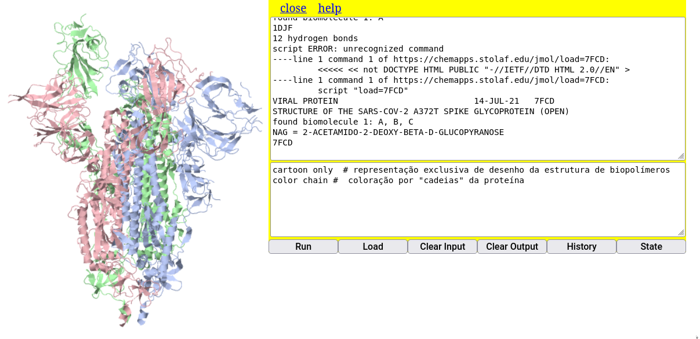
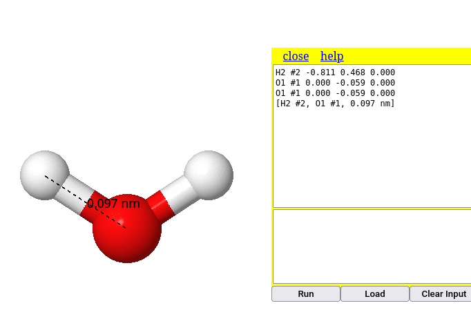
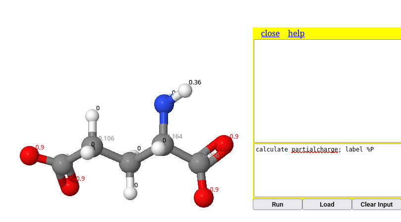
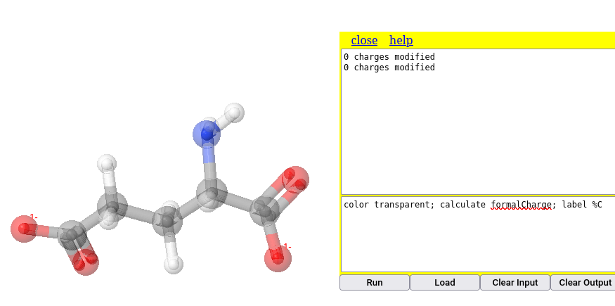
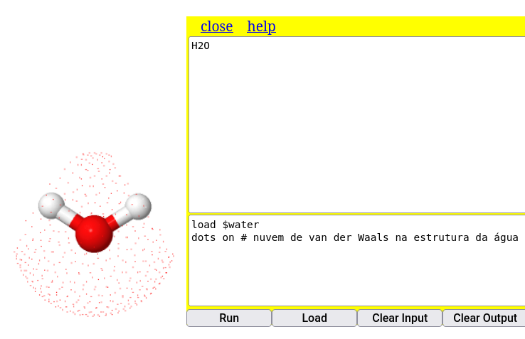
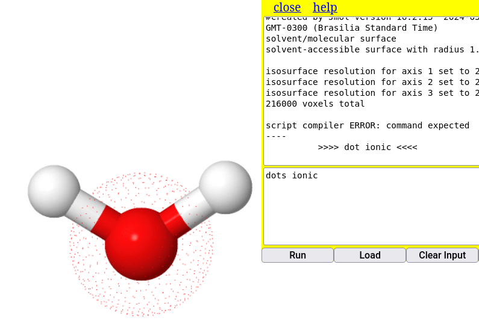

* Open local file # abre janela para buscar o arquivo do modelo no computador;
* Open URL # abre janela para buscar o endereço de internete que possui o arquivo
* Get PDB file # abre janela para inserir um código de macromolécula do site homônimo (proteínas, ácidos nucleicos, principalmente)
* Get MOL file # abre janela para buscar um arquivo *.mol
* Open script # abre janela para buscar um trecho de código no computador3 - Alguns comandos pra se aventurar nas moléculas voadoras
Objetivos:
1. Carregar uma molécula no Jmol de formas alternativas
2. Utilizar o Console para alguns comandos
1 Como carregar uma molécula no JSmol
O JSmol nada mais é do que o próprio Jmol, só que desenvolvido para ser utilizado em navegador de internet, e que usa entre suas linguagens o JavaScript (daí o S do JSmol).
Supondo que você já tenha aberto em seu navegador a janela para o applet do JSmol mas que, contrariamente ao que foi feito antes (nome da molécula ao final do site PubChem, você queira:
- carregar uma molécula a partir de outro banco de dados;
- carregar uma molécula cujo arquivo já esteja em seu computador
Bom, nesse caso você pode usar o mouse ou uma linha de comando, como preferir.
1.1 Carregando a molécula com o mouse
Para isto basta clicar com o botão direito do mouse no ecrã, como anteriormente, e selecionar File–>Load. As opções que se apresentam são:
A primeira opção é autoexplicativa (
Open local file), a segunda opção (Open URL) depende do endereço correto para um determinado modelo molecular, a terceira (Get PDB file) refere-se ao banco de dados Protein Data Brookhaven para biopolímeros, a quarta (Get MOL file) envolve a busca online em banco de dados específico para pequenas moléculas, e a última (Open script), a busca de um arquivo que contenha linhas de código do Jmol para um conjunto de ações. Como os livros didáticos permeiam estruturas moleculares pequenas, normalmente associadas aos grupos funcionais da Química Inorgânica e Orgânica, bem como exemplos específicos em áreas como Saúde, Biotecnologia e Indústria, incluindo também alguns modelos de macromoléculas, pode-se concluir que é mais provável que você utilize a busca remota de pequenas moléculas (Get MOL file), moléculas contidas em seu computador (Open local file), e/ou biomacromoléculas (Get PDB file).
O carregamento de pequenas moléculas é idêntico ao que foi experimentado adicionando-se o nome do modelo ao final do endereço do JSmol. O carregamento remoto para modelos de proteínas, enzimas e ácidos nucleicos envolve o conhecimento do código PDB desses, ou busca de palavras-chave no sítio Protein Data Brookhaven.
Já o carregamento de moléculas guardadas no PC envolve algumas poucas etapas, a saber:
- Obtém-se o modelo da molécula pela internete, ou o constroi;
- Baixa-se o arquivo correspondente ao modelo (geralmente com um atributo *.mol, *.cif, *.cml, *.sdf, entre mais de 60 formatos);
- Carrega-se na página do JSmol por dois meios alternativos:
1. Por clique de mouse: File --> Load --> Open local file ;
2. Por arraste do arquivo da pasta onde se encontre para a aba do JSmol no navegador. Exemplificando, digamos que você queira visualizar a estrutura da aspirina baixada em seu computador.
Agora é com voce:
- Acesse o site do Pubchem: https://pubchem.ncbi.nlm.nih.gov/
- Digite no campo
aspirine clique na imagem 3D que aparece; - Baixe o modelo clicando em
Download Coordinates, e seguindo-se com a opçãoSDF; - Clique no 1o. link pra abrir as informações da aspirina Baixe o modelo estrutural da aspirina no PubChem ;
- Abra o Console do JSmol no navegador (clique no ecrã com o botão direito do mouse e selecione “Console”);
- Alternativamente:
- Localize o arquivo no PC por “File–>Load–>Open local file”, clicando depois em “Load” para o carregamento;
- Clique no arquivo baixado (“aspirin.sdf”, por ex) e arraste-o diretamente para a janela do JSmol.

### Carregando a molécula por linha de comando
O carregamento de um modelo em particular por linha de comando restringe-se à sua busca pela internet, em banco de dados ou páginas da web. Para isso, abre-se o Console como já explicado. A parte de cima serve para apresentação dos resultados dos comandos, e a parte de baixo, para sua digitação. Nesse caso, clique no quadro inferior do Console e digite o comando de carregamento, aqui exemplificado para um alcano:
load $alkane O Console do Jmol, ainda que constitua uma linguagem própria de programação de comandos, possui uma vantagem interessante sobre demais linguagens de programação: é possível efetuar o comando pelo Console tanto com letras maiúsculas como minúculas, e tanto no singular como no plural.
Você pode tentar com outras moléculas, como aspirin, cholesterol, phenol etc (nomes em inglês, por conta do banco de dados). Para recuperar uma linha de comando que foi escrita antes, basta navegar entre os comandos que foram utilizados com as setas para cima e para baixo do teclado (histórico de comandos).
Os modelos moleculares são carregados a partir do banco de dados Cactus - CADD Group Chemoinformatics Tools and User Services.
1.2 Carregando biopolímeros (proteínas, enzimas, ácidos nucleicos) por linha de comando
Como mecionado acima, o carregamento de macromoléculas biológicas dá-se por identificação de um código alfanumérico da mesma frente ao banco de dados PDB-Protein Data Bank. Após obter esse código, o comando de carregamento é:
load=XXXX # onde XXXX é o código da macromolécula110
# Obs: Perceba que o sinal de "$" é trocado por "=" para o PDB Isso pode ser ilustrado por carregamento remoto da proteína espícula (spike) do vírus Sars-Cov-2, tal como segue:
1. Entre no site do PDB-Protein Data Bank - https://www.rcsb.org/ ;
2. No campo de busca, digite "spike sars-cov-2" ;
3. Selecione a 1a opção (o site vai direcionar para várias estruturas da proteína espícula) ;
4. Memorize o código da 1a. opção (embora qualquer uma também sirva), ou seja, "7FCD" ;
5. Digite a linha para carregar a proteína: "load=7FCD" (tanto faz se maiúsculas ou minúsculas) A representação padrão para proteínas no Jmol é a de arame (“wireframe”). Para visualizar a proteína do vírus de modo mais “amigável” e semelhante ao que aparece em textos ou na internet, digite os comandos abaixo, sua primeira sequência em linguagem de programação.
cartoon only # representação exclusiva de desenho da estrutura de biopolímeros
color chain # coloração por "cadeias" da proteína
Proteínas, enzimas, ácidos nucleicos, e associações macromoleculares são mais pertinentes ao estudo da Bioquímica estrutural. Nesse sentido lhe convido a visitar uma parte do website autoral que possui descrições e representações detalhadas de estruturas bioquímicas com auxílio do Jmol, o site Bioquanti
3 Salvamento do modelo no computador ou dispositivo móvel
Todas as ações realizadas com a molécula produzem um novo modelo que pode ser baixado para o computador. E isso é bem legal porque a molécula modificada (com alteração de cores, representações, animações, por ex) pode ser carregada no Jmol ou na JSmol (internet) como já mencionado. Para tanto, pode-se usar cliques de mouse ou linhas de comando, como segue:
1. Botão direito no ecrã -> File -> Save -> Save as PNG/JMOL # por mouse
ou...
2. write nome_da_molecula.pngj # por linha de comando no Console Uma das características impressionantes com o Jmol é que salvando a molécula como PNG/JMOL, você poderá abrir o arquivo como uma imagem estática com um duplo clique, para apenas mostrar a molécula, ou arrastar o arquivo até a janela do Jmol mesmo no navegador, no que será carregada a estrutura tridimensional e interativa do modelo !!!
Agora é com voce:
- Carregue um modelo para “fenol” digitando no Console:
load $phenol - Salve o modelo digitando no Console: `write fenol.pngj
- Mude a orientação do modelo aleatoriamente com o mouse (só dar uma mexidinha);
- Localize o arquivo
fenol.pngjem seu computador; - Abra-o como uma figura normal, só pra testar;
- Agora arraste o arquivo para a a janela do Jmol online, e veja se o modelo substitui o anterior (basta conferir a orientação)
3.1 Alguns movimentos no Jmol
Para exemplificar algumas ações, usaremos inicialmente o modelo da vitamina C, carregando-o com o comando abaixo no Console.
load $ascorbate4 Movimentos com mouse
Para rotação e translação do modelo, bem como ampliação:
zoom - botão do meio do mouse; se não houver o botão, Shift+botão esquerdo;
rotação - botão esquerdo do mouse
translação - Ctrl+botão direito
rotação no eixo - Shift+botão direito5 Representações do modelo
As representações referem-se ao aspecto visual do modelo (renderização), ou seu estilo, Assim, o Jmol pode renderizar o modelo como vareta, arame, espaço preenchido, bola e vareta, traço, e desenho (tudo em inglês, claro - cpk, wireframe, trace, cartoon).
Experimente esses estilos, incluindo a opção
only. Essa opção permite que a ação não seja sobreposta às anteriores (no caso, a sobreposição das representações). Para isso, copie, cole, e execute em cada linha separada o trecho de código que segue no Console do Jmol, e cuja renderização ilustra a molécula de fluoxetina.

load $fluoxetine # carrega a molécula
wireframe only # estilo em arame
cpk only # espaço preenchido
cpk 20 only, bond 1 # bolas e varetas
cartoon only # representação de cartoon, mas que não ocorre com moléculas pequenas, apenas com biomacromoléculas (proteínas, ácidos nucleicos, por ex) Observe também que a representação em
cartoon não resulta numa renderização para o modelo da fluoxetina. Isso decorre porque a representação em cartoon é restrita para biopolímeros somente, ou seja, proteínas e ácidos nucleicos, e algumas associações supramoleculares. Contudo, se quiser experimentar o
cartoon, será necessário conhecer o código alfanumérico de uma proteína ou ácido nucleico. Exemplificando para a mioglobina, proteína transportadora de oxigênio em mamíferos (código: 1mcy)load=1mcy # carregando a mioglobina
# Obs: veja que a linha de comando pra biopolímeros é ligeiramente diferente da usada pra moléculas pequenas Observe que a renderização padrão para grandes moléculas é a de bolas e varetas, pouco didática para o aprendiz. Nesse caso, pode-se representá-la como desenho exclusivo, digitando-se:
cartoon only # renderizando em desenho Para se conseguir esse e outros códigos de proteínas e ácidos nucleicos, deve-se entrar no banco de dados do PDB - Protein Data Bank, RCSB, e digitar o nome no campo de busca (no caso,
myoglobin). O sistema retorna diversos modelos estruturais e seus códigos, bastando transcrever um desses códigos ao Console do JSmol.6 Cores
Existe grande flexibilidade de cores para o Jmol (e, por consequência, para o JSmol), tanto para os modelos inteiros, partes do modelo (átomos específicos ou um conjunto), e plano de fundo. A visualização padrão de cores segue a convenção CPK (Corey–Pauling–Koltun). Exemplificando para o modelo anterior de vitamina C (
load $ascorbate), experimente a variação que segue, separadamente:color pink
color blue
color ligthgreen
background yellow # cor do plano de fundo O último comando da lista acima permite variar a coloração do plano de fundo.
Adicionalmente, também é possível a coloração de ligações entre os átomos, como segue:
color bonds LightSeaGreen Para um grande espectro de cores, você pode consultar a referência do Jmol Colors, ou um link mais “mastigado”, de nossa autoria junto ao aprendizado do programa no ensino superior, o portal Bioquanti e, mais especificamente, o tópico de cores para o Jmol.
7 Medidas
O Jmol permite calcular distâncias e ângulos em um modelo molecular. Para exemplificar isso, talvez seja interessante o carregamento de um modelo de água (
load $water), e cujas distâncias e ângulos estão presentes em alguns livros de Química.7.1 Para distâncias
No exemplo da molécula de água, para se determinar a distância de uma ligação O-H, por exemplo execute:
1. Duplo-clique do mouse no 1o. átomo;
2. Arraste do mouse ao 2o. átomo;
3. Clique do mouse no 2o. átomo Experimentando para a distância da ligação O-H, o programa retorna o valor de 0,097 nm, ou 0,97 Angstroms, o valor convencial para esse tipo de ligação covalente.

7.2 Para ângulos
Para a mesma molécula de água, experimente determinar o ângulo de ligação:
1. Duplo clique no 1o. átomo (ex: H);
2. Arrasta ao 2o. átomo (ex: O);
3. Clique no 2o. átomo;
4. Arraste ao 3o. átomo (ex: o outro H);
5. Clique no 3o. átomo Perceba que o sistema retorna o valor de 114\(^{o}\), um valor próximo do previsto para a molécula (109.5\(^{o}\)), ou medido (104.5\(^{o}\)). Essa aproximação é decorrente da construção do modelo de água.

Para limpar as medidas, use o comando:
measure off8 Características moleculares
São diveras as informações tangíveis a um modelo molecular no Jmol. Exemplificando as mais básicas para a molécula de um componente do molho shoyo, o glutamato:
8.1 Cargas
Por vezes pode ser interessante apresentar a polaridade das moléculas em função de sua distribuição de cargas. No Jmol há dois tipos de cargas, carga efetiva (
formaCharge) e carga parcial (partialcharge). Podemos ilustrar a distribuição de cargas em uma molécula de tensoativo, como o hexadecanoato.
Para isso, digite no Console os comandos abaixo:
load $hexadecanoate
calculate partialCharge # cálculo de cargas parciais do modelo
label %P # apresentação das cargas (etiquetagem) Uma característica do Jmol que o torna mais eficiente a execução de suas ações é a disposição sequencial de comandos. Dessa forma, não é necessário clicar em Enter para cada comando, bastando separar os comando por ponto e vírgula (;) como ilustrado abaixo, para o cálculo de cargas parciais da molécula de glutamato:

Da mesma forma pode-se ilutrar a obtenção de cargas formais no modelo. Nessa, adicionou-se a coloração transparente, para melhor visualização da carga unitária negativa do ácido carboxílico:
calculate formalcharges # cálculo de cargas parciais do modelo
label %C # apresentação das cargas (etiquetagem)
Perceba que os comando da figura mistura maiúscula e minúsculas, de modo diferente da linha de comando que a antecede. Essa é uma característica bem legal do Jmol, que não se importa com a capitalização ou não da fonte. Ou seja, tanto faz se minúsculo, maiúsculo ou uma combinação de ambos; o Jmol executa a ação do mesmo modo.
8.1.1 Scripts & Ensino Reprodutível
O exemplo acima apresenta uma maneira simples de concatenar comandos, facilitando a execução automática e sequencial de um conjunto desses. No entanto, a visualização da linha de comando fica um pouco prejudicada com a separação por “;”, o que pode acarretar uma poluição visual quando houver vários comandos.
A situação de contorno envolve a disposição dos comandos no formato de um script. Esse nada mais é do que um trecho de código contendo um comando por linha, o que melhora a visualização do código como um todo. Além disso, o script possui a vantagem adicional de se inserir comentários entre as linhas de comando, permitindo também uma melhor apropriação do código e de seu aprendizado.
Essas características de um comando por linha com comentários explicativos conferem ao Jmol seu aspecto para programação de ações sequenciais, e enraiza por consequência uma das premissas básicas para um Ensino Reprodutível: a redação de trechos de códigos em comandos unitários por linha, escritos como num bloco de notas, e com comentários sobre as ações do programa em cada linha.
Exemplificando para um script envolvendo as ações para o glutamato acima, apenas copie o trecho abaixo e cole-o no Console do JSmol, executando-o.
load $glu # carregamento de micromolécula
wireframe only # renderização exclusiva de varetas
calculate partialCharge # carga parcial
label %P Outro aspecto inerente à iniciativa de Ensino Reprodutível reside na possibilidade de se avaliar o código com alguma alteração, objetivando um produto final ligeiramente modificado. Tente repetir o trecho acima, mas para cargas efetivas, ou seja:
load $glu # carregamento de micromolécula
cpk only # renderização exclusiva por espaço preenchido
calculate formalCharge # carga efetiva
label %C Complementarmente, pode-se atuar alterando mais comandos do código, de modo a criar um resultado completamente diferente do original. Isso define outra característica do Ensino Reprodutível, qual seja, a de criação de trecho de código. Ilustrando, segue um trecho baseado no anterior, mas para minimização de energia e reestruturação dos orbitais da molécula.
load $glu # carregamento de micromolécula
cpk only # renderização exclusiva por espaço preenchido
minimize # comando para minimização de energia da estrutura 9 Características moleculares
Por vezes também é interessante apresentar à turma o conceito de forças fracas que permeia as interações moleculares, tal como ilustrado abaixo.
{kind=link}
Além de previsão estrutural para carga parcial e carga formal, o Jmol também permite evidenciar forças fracas no modelo, tais como nuvem de van der Waals e ligações de hidrogênio, como segue.
9.1 Nuvem de van der Waals
dots on # nuvem de van der Waals nos átomos do modelo (retira-se com "dots off")
calculate hbonds # identifica ligações de hidrogênio no modelo Ilustrando, copie e cole o trecho que segue no Console:
load $water
dots on # nuvem de van der Waals na estrutura da água
dots ionic # nuvem iônica sobre o modelo

9.2 Ligações de hidrogênio
load=1djf # carrega um modelo de peptídio
calculate hbonds # apresenta as ligações de H presentes na estrutura

10 Superfícies
Além da superfície de van der Walls (dots on) vista acima, o Jmol é capaz de representar algumas superfícies para modelos moleculares. Quanto maior a molécula, maior o cálculo interno para gerar a superfície, o que pode dificultar sua visualização. Assim, ilustrando um comando simples para superfície da molécula de água:
isosurface molecular # superfície molecular que inclui o solvente